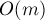

MAXimal
добавлено: 10 Jun 2008 18:03
редактировано: 15 Dec 2011 21:27
Содержание [скрыть]
Обратный элемент в кольце по модулю
Определение
Пусть задан некоторый натуральный модуль  , и рассмотрим кольцо, образуемое этим модулем (т.е. состоящее из чисел от
, и рассмотрим кольцо, образуемое этим модулем (т.е. состоящее из чисел от  до ). Тогда для некоторых элементов этого кольца можно найти обратный элемент.
до ). Тогда для некоторых элементов этого кольца можно найти обратный элемент.
Обратным к числу  по модулю называется такое число
по модулю называется такое число  , что:
, что:
и его нередко обозначают через .
Понятно, что для нуля обратного элемента не существует никогда; для остальных же элементов обратный может как существовать, так и нет. Утверждается, что обратный существует только для тех элементов , которые взаимно просты с модулем .
Рассмотрим ниже два способа нахождения обратного элемента, работающих при условии, что он существует.
В завершение, рассмотрим алгоритм, который позволяет найти обратные ко всех числам по некоторому модулю за линейное время.
Нахождение с помощью Расширенного алгоритма Евклида
Рассмотрим вспомогательное уравнение (относительно неизвестных  и
и  ):
):
Это линейное диофантово уравнение второго порядка. Как показано в соответствующей статье, из условия следует, что это уравнение имеет решение, которое можно найти с помощью Расширенного алгоритма Евклида (отсюда же, кстати говоря, следует, что когда , решения, а потому и обратного элемента, не существует).
С другой стороны, если мы возьмём от обеих частей уравнения остаток по модулю , то получим:
Таким образом, найденное и будет являться обратным к .
Реализация (с учётом того, что найденное надо взять по модулю , и могло быть отрицательным):
int x, y; int g = gcdex (a, m, x, y); if (g != 1) cout << "no solution"; else { x = (x % m + m) % m; cout << x; }
Асимптотика этого решения получается  .
.
Нахождение с помощью Бинарного возведения в степень
Воспользуемся теоремой Эйлера:

которая верна как раз для случая взаимно простых и .
Кстати говоря, в случае простого модуля мы получаем ещё более простое утверждение — малую теорему Ферма:
Умножим обе части каждого из уравнений на , получим:
- для любого модуля :
- для простого модуля :
Таким образом, мы получили формулы для непосредственного вычисления обратного. Для практического применения обычно используют эффективный алгоритм бинарного возведения в степень, который в нашем случае позволит произвести возведение в степень за .
Этот метод представляется несколько проще описанного в предыдущем пункте, однако он требует знания значения функции Эйлера, что фактически требует факторизации модуля , что иногда может оказаться весьма сложной задачей.
Если же факторизация числа известна, то тогда и этот метод также работает за асимптотику .
Нахождение всех простых по заданному модулю за линейное время
Пусть дан простой модуль . Требуется для каждого числа в отрезке ![[1; m-1]](../tex2png/cache/3b7c9525d0056770ca97f2bee9913b2c.png) найти обратное к нему.
найти обратное к нему.
Применяя описанные выше алгоритмы, мы получим лишь решения с асимптотикой . Здесь же мы приведём простое решение с асимптотикой .
Решение это выглядит следующим образом. Обозначим через искомое обратное к числу  по модулю . Тогда для
по модулю . Тогда для  верно тождество:
верно тождество:
Реализация этого удивительно лаконичного решения:
r[1] = 1; for (int i=2; i<m; ++i) r[i] = (m - (m/i) * r[m%i] % m) % m;
Доказательство этого решения представляет из себя цепочку простых преобразований:
Распишем значение :
откуда, беря обе части по модулю , получаем:
Умножая обе части на обратное к и обратное к , получаем искомую формулу:
что и требовалось доказать.